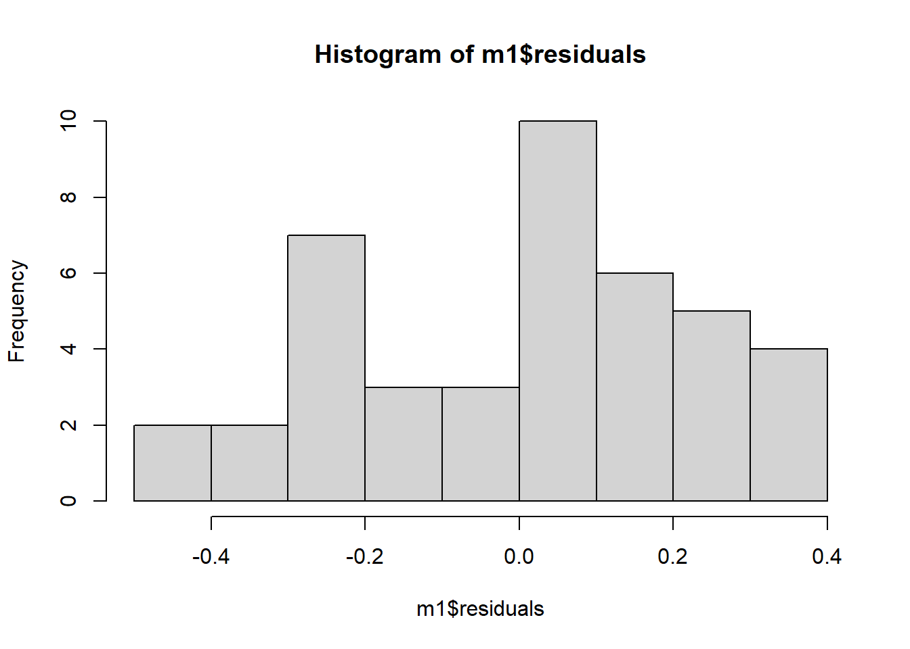

Para visualização dos dados, será construído um simples gráfico de pontos (geom_jitter) ao invés de boxplots (geom_boxplot).
Como cada tratamento possui em torno de 10 respostas (pontos), esse tipo de gráfico já é suficiente para visualizar a distribuição dos valores.
Antes de realizar a ANOVA, é preciso ajustar um modelo linear (lm). Para isso, será utilizada a função lm. Nessa função, os modelos são construídos simbolicamente: com a variável dependente, seguida de um ~, e a variável independente. Em seguida, informamos no argumento data qual o conjunto de dados (data frame) que contém as variáveis do modelo.
Essa fórmula será atribuída a um objeto.
m1 <-lm(tcm ~ especie, data = micelial)
Avaliação das premissas
Uma vez construído o modelo, é necessário determinar se os dados satisfazem as premissas para proceder a análise de variância.
Normalidade
hist(m1$residuals)

shapiro.test(m1$residuals)
Shapiro-Wilk normality test
data: m1$residuals
W = 0.95101, p-value = 0.07022
Tanto visualmente, quanto estatisticamente, os resíduos possuem distribuição normal.
Homogeneidade
bartlett.test(tcm ~ especie, data = micelial)
Bartlett test of homogeneity of variances
data: tcm by especie
Bartlett's K-squared = 3.1169, df = 4, p-value = 0.5385
O teste de Barlett indica que o conjunto de dados possui homogeneidade de variância.
ANOVA
O modelo criado é utilizado dentro da função anova:
anova(m1)
Analysis of Variance Table
Response: tcm
Df Sum Sq Mean Sq F value Pr(>F)
especie 4 0.46917 0.11729 1.983 0.1173
Residuals 37 2.18853 0.05915
Com esse conjunto de dados, é possível concluir que as taxas de crescimento micelial das espécies de Fusarium não diferem significativamente entre si (F = 0.1173 > ⍺ = 0.05).
A função summary será aplicada para produzir um sumário dos resultados do modelo ajustado.
summary(m1)
Call:
lm(formula = tcm ~ especie, data = micelial)
Residuals:
Min 1Q Median 3Q Max
-0.45933 -0.20028 0.06067 0.14017 0.36167
Coefficients:
Estimate Std. Error t value Pr(>|t|)
(Intercept) 1.44333 0.09929 14.537 <2e-16 ***
especieFaus -0.28500 0.14042 -2.030 0.0496 *
especieFcor -0.28400 0.11748 -2.417 0.0207 *
especieFgra -0.30000 0.14042 -2.137 0.0393 *
especieFmer -0.14222 0.12818 -1.110 0.2744
---
Signif. codes: 0 '***' 0.001 '**' 0.01 '*' 0.05 '.' 0.1 ' ' 1
Residual standard error: 0.2432 on 37 degrees of freedom
Multiple R-squared: 0.1765, Adjusted R-squared: 0.08751
F-statistic: 1.983 on 4 and 37 DF, p-value: 0.1173
O intercepto indica a média do primeiro nível (Fasi = 1.43) e em seguida são apresentados as diferenças para cada nível em relação ao primeiro. Por exemplo, a média da taxa de crescimento micelial do nível Faus será 1.15 (1.43 - 0.28).
O intercepto pode ser removido incluindo -1 na construção do modelo. Dessa forma, serão apresentados os valores de média de cada nível:
m2 <-lm(tcm ~ especie -1, data = micelial)summary(m2)
Call:
lm(formula = tcm ~ especie - 1, data = micelial)
Residuals:
Min 1Q Median 3Q Max
-0.45933 -0.20028 0.06067 0.14017 0.36167
Coefficients:
Estimate Std. Error t value Pr(>|t|)
especieFasi 1.44333 0.09929 14.54 < 2e-16 ***
especieFaus 1.15833 0.09929 11.67 5.85e-14 ***
especieFcor 1.15933 0.06280 18.46 < 2e-16 ***
especieFgra 1.14333 0.09929 11.52 8.56e-14 ***
especieFmer 1.30111 0.08107 16.05 < 2e-16 ***
---
Signif. codes: 0 '***' 0.001 '**' 0.01 '*' 0.05 '.' 0.1 ' ' 1
Residual standard error: 0.2432 on 37 degrees of freedom
Multiple R-squared: 0.9668, Adjusted R-squared: 0.9623
F-statistic: 215.7 on 5 and 37 DF, p-value: < 2.2e-16
Exemplo 2) com diferença estatística
Um conjunto de dados similar ao anterior será importado de uma planilha online. Nesse novo conjunto os dados foram alterados para apresentarem diferença estatística e avançarmos na análise inferencial.
Análise exploratória - obtenção e visualização dos dados
micelial2 <-gsheet2tbl("https://docs.google.com/spreadsheets/d/1bq2N19DcZdtax2fQW9OHSGMR0X2__Z9T/edit#gid=959387827")#tcm = taxa de crescimento micelial
Shapiro-Wilk normality test
data: m3$residuals
W = 0.9821, p-value = 0.8782
Tanto visualmente, quanto estatisticamente, os resíduos possuem distribuição normal.
Homogeneidade
bartlett.test(tcm ~ especie, data = micelial2)
Bartlett test of homogeneity of variances
data: tcm by especie
Bartlett's K-squared = 4.4367, df = 4, p-value = 0.3501
O teste de Barlett indica que o conjunto de dados possui homogeneidade de variância.
Análise inferencial - ANOVA
anova(m3)
Analysis of Variance Table
Response: tcm
Df Sum Sq Mean Sq F value Pr(>F)
especie 4 1.46958 0.36739 19.629 2.028e-07 ***
Residuals 25 0.46792 0.01872
---
Signif. codes: 0 '***' 0.001 '**' 0.01 '*' 0.05 '.' 0.1 ' ' 1
summary(m3)
Call:
lm(formula = tcm ~ especie, data = micelial2)
Residuals:
Min 1Q Median 3Q Max
-0.23667 -0.09667 0.01583 0.08833 0.28333
Coefficients:
Estimate Std. Error t value Pr(>|t|)
(Intercept) 1.57167 0.05585 28.140 < 2e-16 ***
especieFaus -0.33500 0.07899 -4.241 0.000266 ***
especieFcor -0.25000 0.07899 -3.165 0.004047 **
especieFgra -0.66000 0.07899 -8.356 1.05e-08 ***
especieFmer -0.14500 0.07899 -1.836 0.078317 .
---
Signif. codes: 0 '***' 0.001 '**' 0.01 '*' 0.05 '.' 0.1 ' ' 1
Residual standard error: 0.1368 on 25 degrees of freedom
Multiple R-squared: 0.7585, Adjusted R-squared: 0.7199
F-statistic: 19.63 on 4 and 25 DF, p-value: 2.028e-07
Com esse novo conjunto de dados, conclui-se que as taxas de crescimento micelial das espécies de Fusarium diferem significativamente entre si (F = 2.2 * 10-7 > ⍺ = 0.05). O próximo passo será adotar um teste de comparação de médias para conhecer como as espécies se agrupam quanto as taxas de crescimento.
Comparação de médias - Teste de Tukey
Para realizar o teste de Tukey, utilizaremos os pacotes emmeans, multcomp e multcompview.
Inicialmente, a função emmeans (pacote emmeans) será aplicada para estimar as médias de um fator específico em um modelo linear. O resultado será atribuído a um objeto.
medias1 <-emmeans(m3, ~ especie)
Para comparação de médias - Teste de Tukey - será utilizada a função cld (pacote multcomp).
cld(medias1)
especie emmean SE df lower.CL upper.CL .group
Fgra 0.912 0.0559 25 0.797 1.03 1
Faus 1.237 0.0559 25 1.122 1.35 2
Fcor 1.322 0.0559 25 1.207 1.44 2
Fmer 1.427 0.0559 25 1.312 1.54 23
Fasi 1.572 0.0559 25 1.457 1.69 3
Confidence level used: 0.95
P value adjustment: tukey method for comparing a family of 5 estimates
significance level used: alpha = 0.05
NOTE: If two or more means share the same grouping symbol,
then we cannot show them to be different.
But we also did not show them to be the same.
Com o resultado obtido a um nível de significância de 5%, interpretamos que Fgra possui a menor taxa de crescimento, em comparação as demais espécies. Faus, Fcor e Fmer possuem taxa de crescimento estatisticamente similar. Já Fmer e Fasi são estatisticamente similares e possuem a maior taxa de crescimento.
Alternativas para verificação das premissas
Pacote DHARMa
plot(simulateResiduals(m3))
Pacote performance
library(performance)check_normality(m3)
OK: residuals appear as normally distributed (p = 0.878).
check_heteroscedasticity(m3)
OK: Error variance appears to be homoscedastic (p = 0.880).